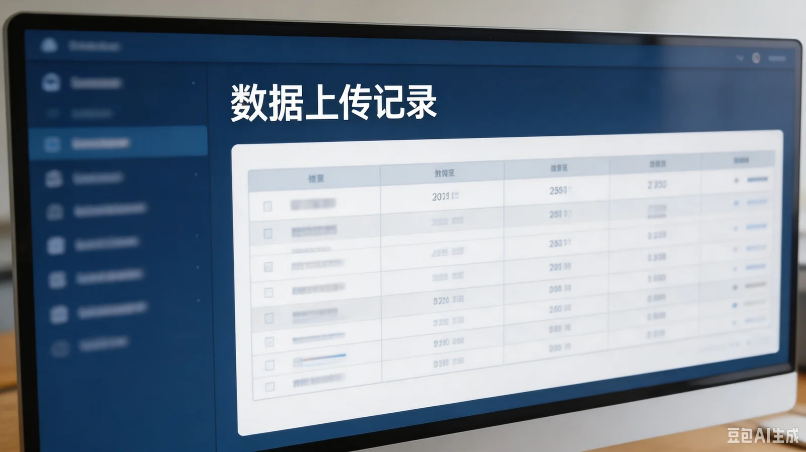

产品与服务 › 数据平台
青云村示范点 · 数据平台
实时展示示范点 20 套监测设备的土壤温湿度、光照与气象数据。
| 设备号 | 布设位置 | 最后上报时间 | 状态 |
|---|---|---|---|
| HW-01 | 村东田块 | 2026-07-19 14:32 | 正常 |
| HW-02 | 村东田块 | 2026-07-19 14:32 | 正常 |
| HW-03 | 村东田块 | 2026-07-19 14:32 | 正常 |
| HW-04 | 村东田块 | 2026-07-19 14:32 | 正常 |
| HW-05 | 村东田块 | 2026-07-19 14:32 | 正常 |
| HW-06 | 村西片区 | 2026-07-19 14:32 | 正常 |
| HW-07 | 村西片区 | 2026-07-19 14:32 | 正常 |
| HW-08 | 村西片区 | 2026-07-19 14:32 | 正常 |
| HW-09 | 村西片区 | 2026-07-19 14:32 | 正常 |
| HW-10 | 村西片区 | 2026-07-19 14:32 | 正常 |
| HW-11 | 村西片区 | 2026-07-19 14:32 | 正常 |
| HW-12 | 村西片区 | 2026-07-19 14:32 | 正常 |
| HW-13 | 村西片区 | 2026-07-19 14:32 | 正常 |
| HW-14 | 村西片区 | 2026-07-19 14:32 | 正常 |
| HW-15 | 村西片区 | 2026-07-19 14:32 | 正常 |
| HW-16 | 村西片区 | 2026-07-19 14:32 | 正常 |
| HW-17 | 村西片区 | 2026-07-19 14:32 | 正常 |
| HW-18 | 大棚区 | 2026-07-19 14:32 | 正常 |
| HW-19 | 大棚区 | 2026-07-19 14:32 | 正常 |
| HW-20 | 大棚区 | 2026-07-19 14:32 | 正常 |
（系统 07-20 起进入"升级维护"，以上为最后一份完整快照。）
20 套设备，最后上报时间均为 2026-07-19 14:32。
14:32 之前，这套设备两小时一报、那套三小时一报——从不整齐。14:32，二十套设备同时上报了最后一次，然后全部离线。做数据的人，把时间停在了同一个点上。
数据说明
平台展示示范点各设备实时采集数据。07-16 至 07-19 期间，土壤湿度、光照等指标均处于"适宜"区间，曲线平稳美观。
数据异常请联系项目维护负责人——赵经理（项目部）。
维护公告
07-20 起，因平台升级，全部设备暂停数据上传。恢复时间另行通知。
